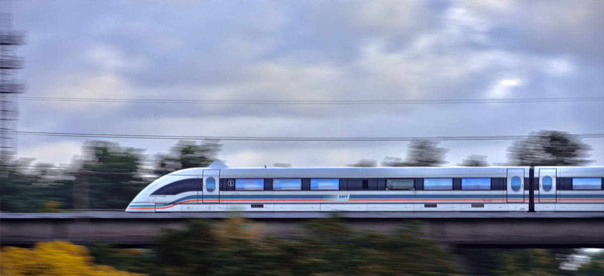

Влакът Maglev не е конвенционален високоскоростен модел.
Вместо това, той използва електромагнитна сила, за да левитира над пистата, елиминирайки триенето и позволявайки невероятно гладко и тихо пътуване. Shanghai Maglev Transportation Development Company притежава и експлоатира Shanghai Maglev. Siemens и немската мултинационална ThyssenKrupp конструираха влака като съвместно предприятие.
Услугата стартира търговски операции през април 2004 г.
и се движи по 30,5-километровата линия Shanghai Maglev. Това е първата комерсиално експлоатирана високоскоростна магнитна левитационна линия, минаваща от Longyang Road Station в Шанхай, Китай до Shanghai Pudong International Airport, маршрутът е първата комерсиално експлоатирана високоскоростна магнитна левитационна линия.
Маглев влакът
може да измине разстоянието от около 19 мили за малко под осем минути, което все пак го прави невероятно ефективна връзка с летището, въпреки факта, че не завършва в центъра на града.
Система
Проектът Shanghai Maglev се притежава, управлява и поддържа от SMTDC, китайската компания, създадена за изпълнение на проекта. Маглев линията в момента работи на 15-минутни интервали, 15 часа/ден, 7 дни/седмица, като поддръжката/ремонтите са планирани през нощните часове. Два 5-секционни вагона са в експлоатация за 108 пътувания на ден, с трети автомобил като резерва.Маглевите влакове обикновено достигат 220 mph (350 km/h) за 2 минути, с максимална скорост от 268 mph (431 km/h) при нормално обслужване. По време на тестов пробег на 12 ноември 2003 г. маглев влак достигна максимална скорост от 501 км/ч.Влакът се движи от гара Longyang Road на линия 2 на метрото в Шанхай до международното летище Pudong, а общата дължина на коловоза е около 30 километра, с допълнителен отделен коловоз, водещ до съоръжение за поддръжка. Влакът отнема 7 минути и 20 секунди, за да завърши пътуването и има максимална работна скорост от 431 километра в час.
Конструкция
В град Касел, Германия, бяха построени 18-те автомобилни секции за Шанхай, както и около 124 000 от статорните пакети, които са прикрепени към пътеката. Вътре в статорните пакети са дисковете, за които EBG Gesellschaft für Elektromagnetische Werkstoffe mbH, Бохум (друга компания от ThyssenKrupp Group) достави електрическия метален лист. ThyssenKrupp Transrapid достави намотките на двигателя, които трябва да бъдат поставени в статорните пакети (включително инсталационно оборудване), както и осем превключвателя за направляващи. По-голямата част от инженерната работа за тези компоненти е извършена от ThyssenKrupp Transrapid. Гъвкавите стоманени греди за превключвателите са произведени и монтирани от Krupp Stahlbau Hannover. Блоковете за управление на превключвателите и намотките на двигателя бяха възложени на външни изпълнители. Всички подсистеми бяха сглобени и инсталирани в Шанхай от персонала на китайския клиент под надзора на Transrapid Systems Consortium. В рязък контраст, пътеката (състояща се от греди, подконструкции и основи) беше изцяло в ръцете на китайците, с известна консултантска подкрепа от германския консорциум за направляващи.
Данни за влака Maglev
- Брой превозни средства/влакове: 3
- Секции: 6 всеки влак
- Дължина: 153,6м
- Широчина: 3,7м
- Височина: 4,2м
- Краен участък (ES) 1 клас: 56
- Средна секция (MS) 2 клас: 110
- Краен участък (ES) 2 клас: 78
- Макс.работна скорост: 505 км/ч